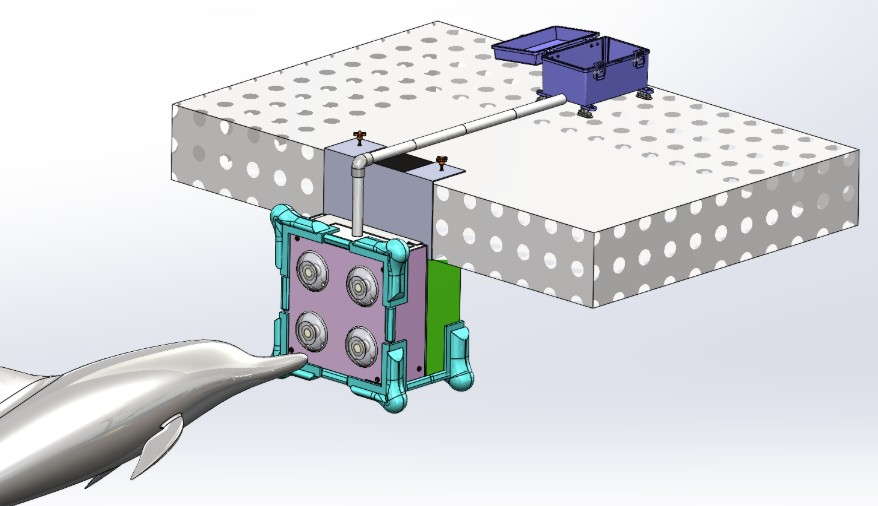

Senior Capstone Project - Dolphin Enrichment Device. Client facing project, full electro-mechanical design cycle from problem definition to verification

Over my 9 week internship as an Engineering Intern, I spent each week working with a different team or department. Some of these teams included, Railroad Track Maintence, Track Design, Signal, New Rail Construction, and Bridge Inspection. I had the chance to travel to 7 states across the USA to work on site with each of the different teams. Being able to see how the leaders of each group interact with their team and the different leadership style was one of my favorite parts of the internship.
I learned two new software programs, MicroStation and GIS, to be able to work with the Track Design team. During my week with them, I designed an inital path for a concept of a new railway. I had to research and implement relevant railway laws.
My overarching project from my internship was to conduct the preliminary research for an upcoming pilot program. The program was to predict when either tie, ballast, or rail would need to be replaced so that there wouldn’t be a time when more than one component would need to be replaced. I reviewed and organized past data in Excel, compiled all data for easier processing, identified a plan of action and presented findings to supervisor.